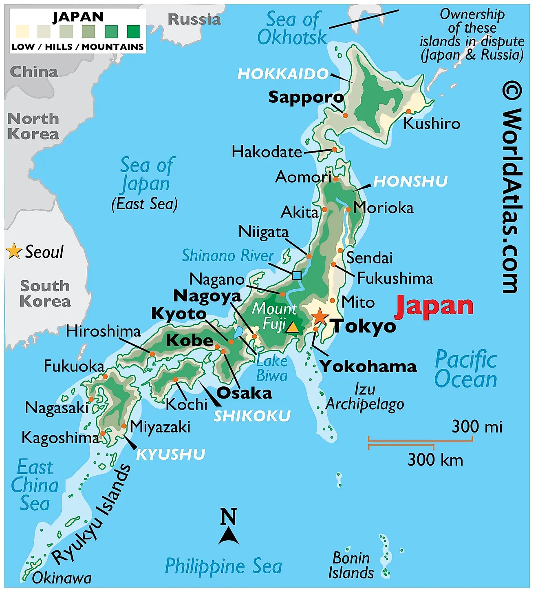

uitleg
Dit is mijn interactieve landskaart :D. Klik hier op de cirkels en reis met mij mee door japan!.
dit is een tijdelijke opmaak van de fotos en textjes
Na 17 uur vliegen en een tussenstop in Dubai kwamen we kotsmisselijk en in het donker aan in Tokyo Haneda! Vanaf het vliegveld moesten we een half uurtje lopen om bij ons eerste hotel te komen, dit was al een bijzondere wandeling omdat in het donker liepen we langs de snelweg en dit gaf al heel snel een heel vrij gevoel raar genoeg. Alles was al zo anders en onbekend voor ons.


Toen we eenmaal aankwamen hebben we een klein rondje in de wijk gemaakt. Hier hebben wij ook onze eerste vending machine drankjes gekocht!. Kort hierna zijn we gaan slapen om de volgende dag door te gaan naar het volgende hotel in akihabara. Onderweg naar akihabara zijn we langs Shibuya gegaan en hier rondgedwaald bij de Shibuya crossing.


Akihabara is echt fantastisch als je van games, films, comics, of anime houd. Overal zijn winkels en soms hebben deze wel 9 verdiepingen. Hier hebben wij de meeste tijd in Tokyo doorgebracht gezien er zo veel te doen was.


De laatste nacht in Tokyo hebben we in een sleeping pod hotel geslapen. Hier slaap je in een gezamenlijke ruimte met allemaal slaap hokjes. In foto’s ziet dit er altijd cozy uit maar het was minder bijzonder dan we verwacht hadden. Hierna zijn we met de Shinkansen (bullettrain) naar Nakatsugawa geschoten.


Nakatsugawa was onze eerste verblijfsplaats buiten de grote steden. Hier kregen we echt een beeld van het Japanse platte land (in de bergen dan). Hier hebben wij een paar nachtjes uitgerust in een luux hotel met Onsen. Een onsen is een heel warm bad waar je na een lange dag lekker in kan weken.


Na een nachtje in het fancy hotel zijn we naar een ryokan gegaan iets verder buiten het dorp. Dit is een traditioneel japans huis waar vroeger samurai in hebben gewoond. Wij zijn hier met onze tassen heengelopen en na het droppen van onze spullen zijn we met een bus naar Magamo gereisd om hier de Nakasendo trail te bewandelen. Deze wandeltocht was van oudsher een van de vijf wandelroutes om van noord naar zuid Japan te kunnen. Hier zijn prachtige traditionele dorpen uit ontstaan en de route zelf was fantastisch. Na de wandeltocht hebben we alle bijzonderheden van de ryokan mogen ervaren.


kan nog wat foto's van de wandelroute gebruiken
Onze volgende bestemming was Kyoto, hier hebben we in verschillende delen van de stad in hotelletjes gezeten en flink wat cultuur gesnoven want wauw Kyoto staat vol tempels en oude huizen. Hier hebben wij een dag lang zo veel mogelijk bijzonderheden bezocht. Ik kan me de namen echt niet meer herinneren maar de foto’s spreken van zich


Na Kyoto zijn we met een 15 minuten Shinkansen trip naar Osaka gegaan. Hier hebben we een paar nachtjes gezeten en hebben we van de lopende band sushi gegeten. Verder vonden we het niet superduper bijzonder en bedachten we ons dat we de grote steden een beetje zat waren
Nara is een bijzonder dorpje waar hertjes vrij rondlopen, deze kun je aaien en voeren. Dit was echt heel bijzonder om te zien hoe een dorp zich naar de natuur heeft aangepast.
We besloten om in plaats van Hiroshima naar Kanazawa te gaan. Hier hebben we een mooie tuin bezocht en een paar dagen uitgerust.
Ik had erg zin om iets avontuurlijks te doen dus ik heb op een wandelroute website gekeken naar mooie tochten. Toen kwam ik uit in Hakuba in Nagano. Dit leek best een afgelegen rustig dorp waar niks bijzonders zou zijn dus de verwachtingen waren laag. Echter na een lange busrit kwamen we er snel achter dat dit de Japanse alpen waren en de bergen flink hoog waren. Ons hotel was deel van een resort voor de olympische spelen in 1998. We hadden lukraak een olympisch skigebied uitgekozen om te wandelen. Hier zijn we met een skilift de voet van de berg op gegaan om vervolgens een klim te maken naar de top van een aanliggende berg. Dit was echt bijzonder mooi en de view was ondanks de wolken echt om van te genieten. We hebben op het ijs van de top gestaan en dit was best raar gezien het in de vallei rond de 30 graden was.
De laatste week hebben we in Tokyo doorgebracht, hier hebben we de laatste bezienswaardigheden bezocht en hebben we nog een paar dagen in Akihabara gedwaald. Ook hebben we hier echt sushi gegeten bij een sushi chef.